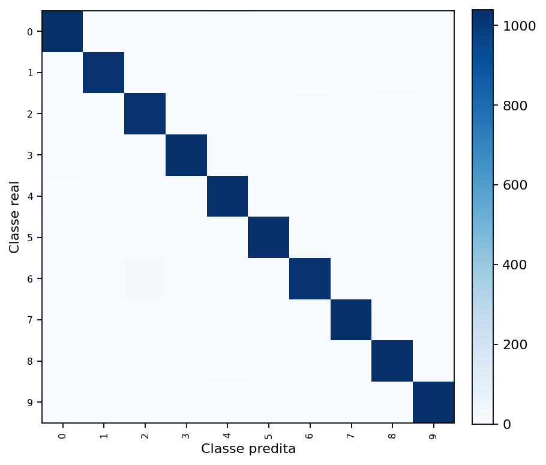
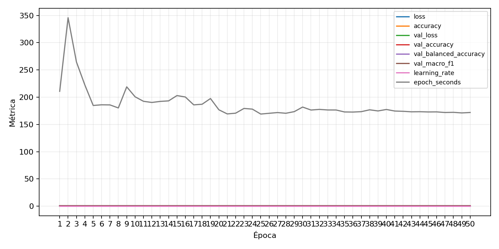

| n_samples | 10500 |
|---|---|
| loss | 0.09108402580022812 |
| accuracy | 0.9848571428571429 |
| balanced_accuracy | 0.9848571428571429 |
| macro_f1 | 0.9848545611798128 |


| Índice | Classe | Suporte | Precisão | Recall | F1 |
|---|---|---|---|---|---|
| 0 | 0 | 1050 | 0.9820245979186376 | 0.9885714285714285 | 0.9852871381110583 |
| 1 | 1 | 1050 | 0.9913461538461539 | 0.981904761904762 | 0.9866028708133971 |
| 2 | 2 | 1050 | 0.9828080229226361 | 0.98 | 0.9814020028612304 |
| 3 | 3 | 1050 | 0.9848341232227488 | 0.9895238095238095 | 0.9871733966745844 |
| 4 | 4 | 1050 | 0.9792060491493384 | 0.9866666666666667 | 0.9829222011385199 |
| 5 | 5 | 1050 | 0.9820415879017014 | 0.9895238095238095 | 0.9857685009487667 |
| 6 | 6 | 1050 | 0.9854791868344628 | 0.9695238095238096 | 0.9774363898223717 |
| 7 | 7 | 1050 | 0.9792843691148776 | 0.9904761904761905 | 0.9848484848484849 |
| 8 | 8 | 1050 | 0.9847473784556721 | 0.9838095238095238 | 0.9842782277274892 |
| 9 | 9 | 1050 | 0.9971181556195965 | 0.9885714285714285 | 0.9928263988522237 |
{"adapter":"kmnist","balance_mode":"all_raw","class_names":["0","1","2","3","4","5","6","7","8","9"],"dataset":"kmnist","dataset_options":{},"dataset_root":"/home/msduda/datasets-tcc/kmnist","native_channels":1,"normalization":"unit_interval","num_classes":10,"protocol":{"checkpoint_monitor":"val_macro_f1","dtype_policy":"mixed_float16","early_stopping":{"patience":50,"restore_best_weights":true},"evaluation_augmentation":false,"input_channels":"native","optimizer":"Adam","pretrained_weights":false,"reduce_lr_on_plateau":{"factor":0.3,"min_lr":1e-07,"patience":50},"resize":"proportional_padding","test_time_augmentation":false,"training_from_scratch":true},"seed":42,"source_fingerprint":"8928d478d8d23938a73b4f4a92c407bf3d74beff1e0e67e3644d6ecdc30cf828","source_manifest":{"class_names":["0","1","2","3","4","5","6","7","8","9"],"joined_samples":70000,"metadata":{"layout":"kmnist-component-npz"},"name":"kmnist","native_channels":1,"source_path":"/home/msduda/datasets-tcc/kmnist","splits":{"test":10000,"train":60000},"target_size":64},"target_size":64,"test_fraction":0.15,"train_fraction":0.7,"training":{"augmentation":{"brightness_delta":0.0,"contrast_lower":1.0,"contrast_upper":1.0,"cutout_max_frac":0.0,"cutout_prob":0.0,"flip_lr":false,"noise_std":0.0,"translate_frac":0.0,"zoom_max":1.0,"zoom_min":1.0},"batch_size":16,"default_image_size":64,"dtype_policy":"mixed_float16","early_stopping_patience":50,"extra_fraction":0.0,"image_size_overrides":{"gtsrb":128},"keras_verbose":1,"learning_rate":0.0003,"max_epochs":50,"preprocess_cache_max_mib":0,"reduce_lr_factor":0.3,"reduce_lr_min_lr":1e-07,"reduce_lr_patience":50,"shuffle_buffer_max_mib":0},"validation_fraction":0.15}
{"epochs_completed":50,"epochs_recorded":50,"evaluation_seconds":65.77866130399889,"fit_seconds_current_attempt":11921.102875594,"max_epoch_seconds":345.81273874199985,"max_epochs":50,"mean_epoch_seconds":186.29133455216336,"mean_train_examples_per_second":267.09194813839366,"median_train_examples_per_second":277.0239063976816,"min_epoch_seconds":169.0945709130001,"selected_checkpoint":"/mnt/e/tcc-benchmark/outputs/kmnist-alldata-noaug-batch-sweep-2026-08-06/batch-016/kmnist/runs/kmnist__unit_interval__all_raw__seed-42/checkpoints/best.keras","total_seconds":9128.275393056005,"training_seconds":9128.275393056005,"wall_seconds_current_attempt":11994.197485429}
{"elapsed_seconds":11994.259817346,"event_counts":{"data_preparation_end":1,"data_preparation_start":1,"epoch_end":49,"evaluation_end":1,"evaluation_start":1,"fit_end":1,"fit_start":1,"periodic":2357,"run_completed":1,"train_start":1},"generated_at":"2026-08-06T07:41:34.350+00:00","gpu_backend":"pynvml","interval_seconds":5.0,"metrics":{"cpu_percent":{"count":2414,"max":18.8,"mean":10.710273405136702,"min":0.0,"p50":10.2,"p95":15.2},"disk_data_free_bytes":{"count":2414,"max":998273851392.0,"mean":998270032134.9991,"min":998253277184.0,"p50":998270349312.0,"p95":998270353408.0},"disk_data_percent":{"count":2414,"max":2.7,"mean":2.7,"min":2.7,"p50":2.7,"p95":2.7},"disk_data_total_bytes":{"count":2414,"max":1081101176832.0,"mean":1081101176832.0,"min":1081101176832.0,"p50":1081101176832.0,"p95":1081101176832.0},"disk_data_used_bytes":{"count":2414,"max":27855544320.0,"mean":27838789369.000828,"min":27834970112.0,"p50":27838472192.0,"p95":27843362816.0},"disk_output_free_bytes":{"count":2414,"max":173527060480.0,"mean":173515958003.91052,"min":173504614400.0,"p50":173516017664.0,"p95":173526034022.4},"disk_output_percent":{"count":2414,"max":82.7,"mean":82.7,"min":82.7,"p50":82.7,"p95":82.7},"disk_output_total_bytes":{"count":2414,"max":1000186310656.0,"mean":1000186310656.0,"min":1000186310656.0,"p50":1000186310656.0,"p95":1000186310656.0},"disk_output_used_bytes":{"count":2414,"max":826681696256.0,"mean":826670352652.0895,"min":826659250176.0,"p50":826670292992.0,"p95":826680233984.0},"elapsed_seconds":{"count":2414,"max":11994.185707,"mean":6015.140882501243,"min":0.040515,"p50":6021.585041,"p95":11413.75843365},"gpu_count":{"count":2414,"max":1.0,"mean":1.0,"min":1.0,"p50":1.0,"p95":1.0},"gpu_memory_percent":{"count":2414,"max":62.61148452758789,"mean":54.55511092349529,"min":49.04003143310547,"p50":52.14109420776367,"p95":62.177324295043945},"gpu_memory_total_bytes":{"count":2414,"max":8589934592.0,"mean":8589934592.0,"min":8589934592.0,"p50":8589934592.0,"p95":8589934592.0},"gpu_memory_used_bytes":{"count":2414,"max":5378285568.0,"mean":4686248344.921292,"min":4212506624.0,"p50":4478885888.0,"p95":5340991488.0},"gpu_temperature_c":{"count":2414,"max":57.0,"mean":44.29453189726595,"min":37.0,"p50":43.0,"p95":54.0},"gpu_utilization_percent":{"count":2414,"max":86.0,"mean":33.722866611433304,"min":1.0,"p50":36.0,"p95":44.0},"process_cpu_percent":{"count":2414,"max":324.2,"mean":130.96884838442418,"min":0.0,"p50":123.8,"p95":188.835},"process_read_bytes":{"count":2414,"max":1014431744.0,"mean":1012946465.5111848,"min":783024128.0,"p50":1014108160.0,"p95":1014108160.0},"process_rss_bytes":{"count":2414,"max":3914817536.0,"mean":3676462355.724938,"min":1021173760.0,"p50":3776212992.0,"p95":3891109888.0},"process_vms_bytes":{"count":2414,"max":48679485440.0,"mean":48349537275.75808,"min":39581388800.0,"p50":48458919936.0,"p95":48596330700.8},"process_write_bytes":{"count":2414,"max":1146880.0,"mean":1141811.7514498758,"min":4096.0,"p50":1146880.0,"p95":1146880.0},"ram_available_bytes":{"count":2414,"max":15536295936.0,"mean":13024121234.134216,"min":12776046592.0,"p50":12923342848.0,"p95":13640133836.8},"ram_percent":{"count":2414,"max":23.1,"mean":21.630157415078706,"min":6.5,"p50":22.2,"p95":22.9},"ram_total_bytes":{"count":2414,"max":16619081728.0,"mean":16619081728.0,"min":16619081728.0,"p50":16619081728.0,"p95":16619081728.0},"ram_used_bytes":{"count":2414,"max":3843035136.0,"mean":3594960493.8657827,"min":1082785792.0,"p50":3695738880.0,"p95":3808049971.2}},"sample_count":2414,"schema_version":1}